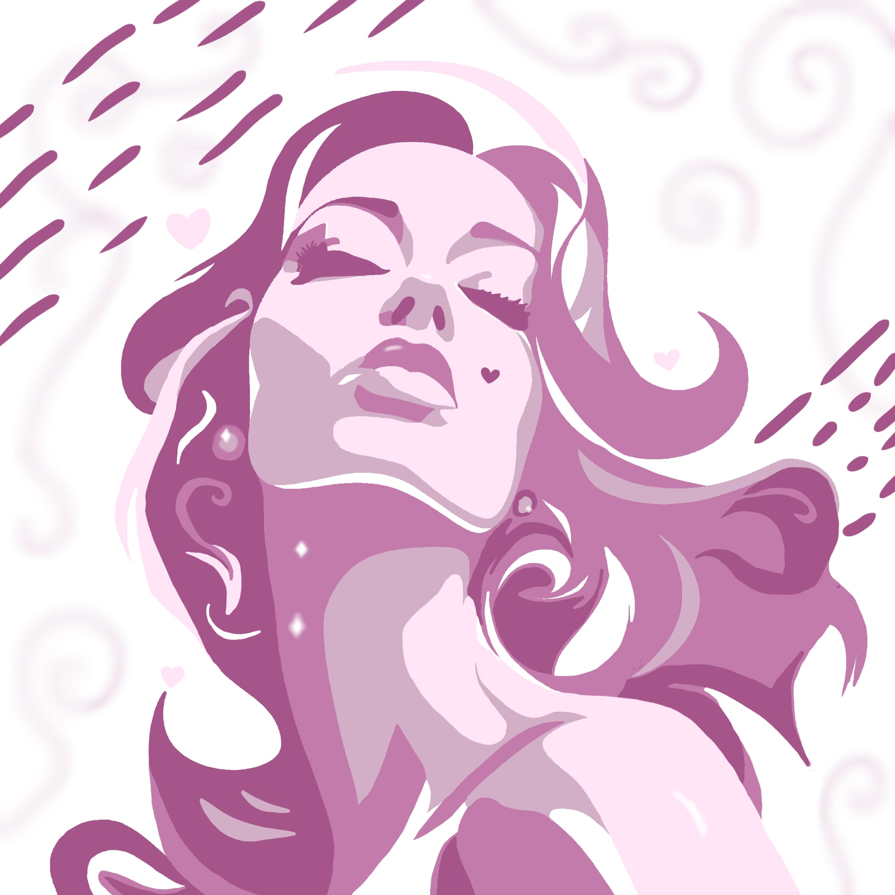
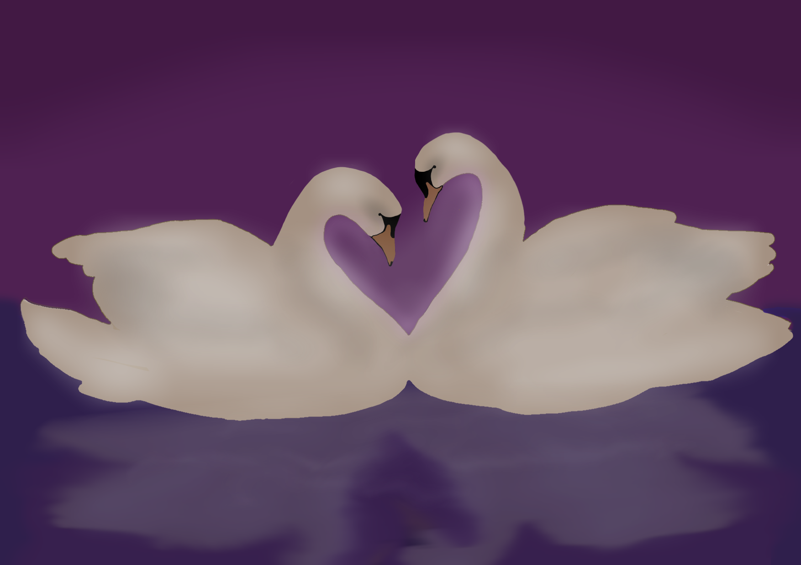
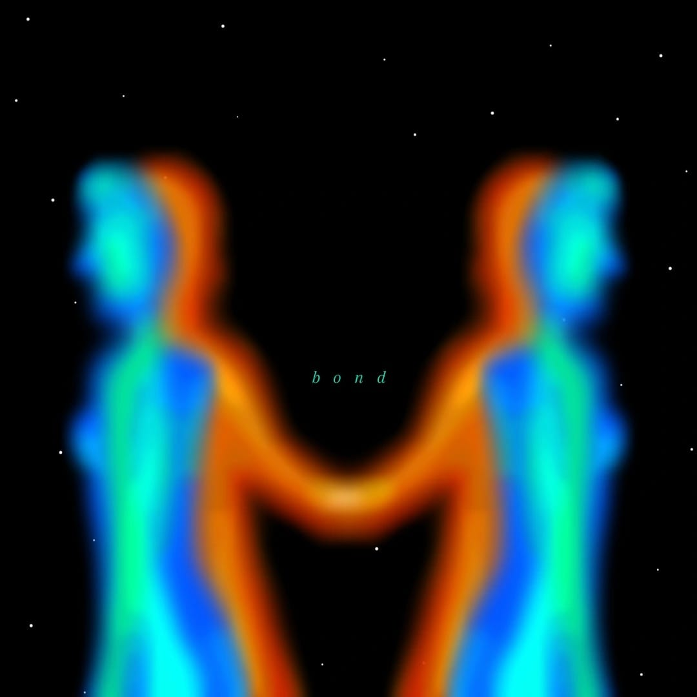
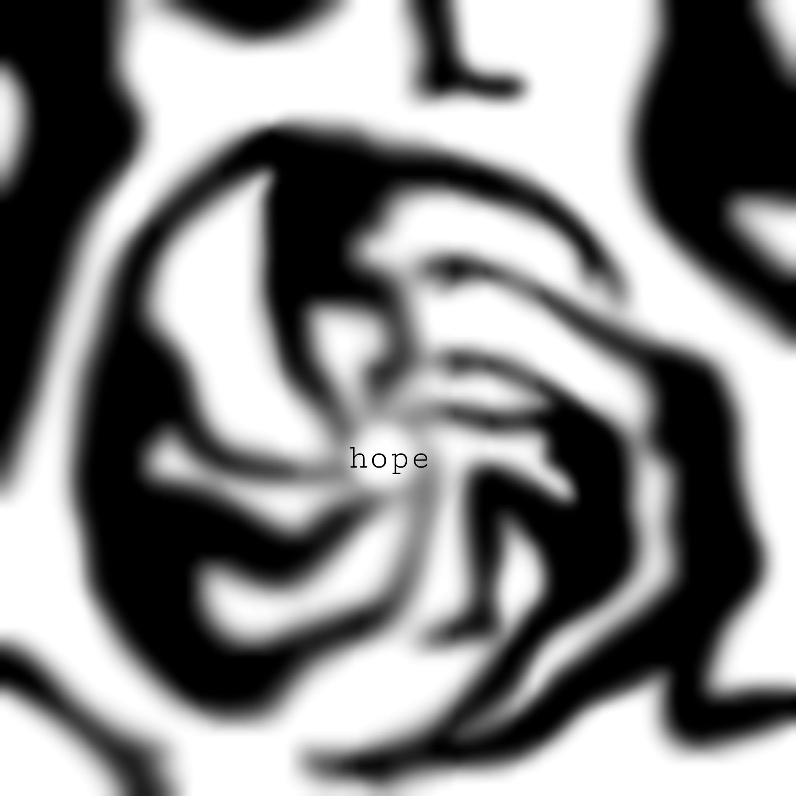
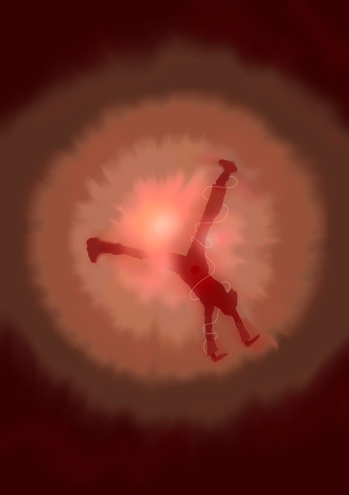
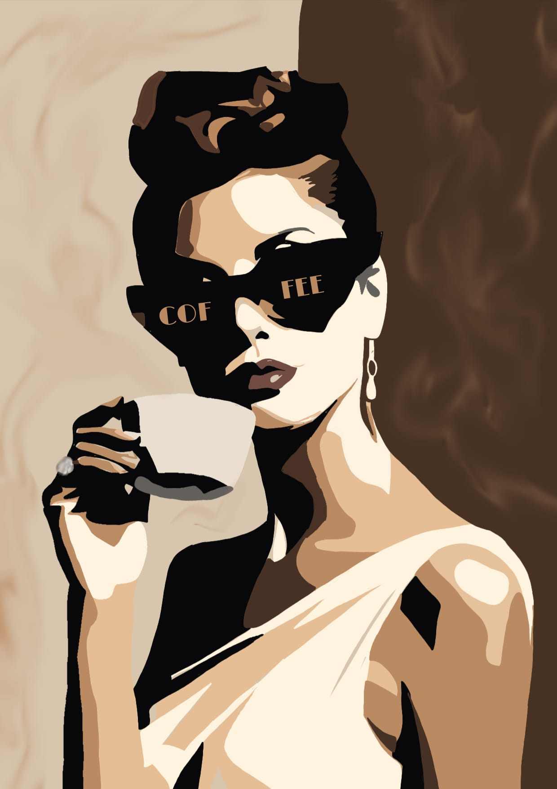

Różowy sen
Pink dream

Szepty serc
Whispers of the Heart

Splątane dusze
Entangled souls

Spirala desperacji
Spiral of desperation

Uwolnienie
Liberation

Posmak elegancji
A taste of elegance
Inspirowane grafiką z serwisu Pinterest